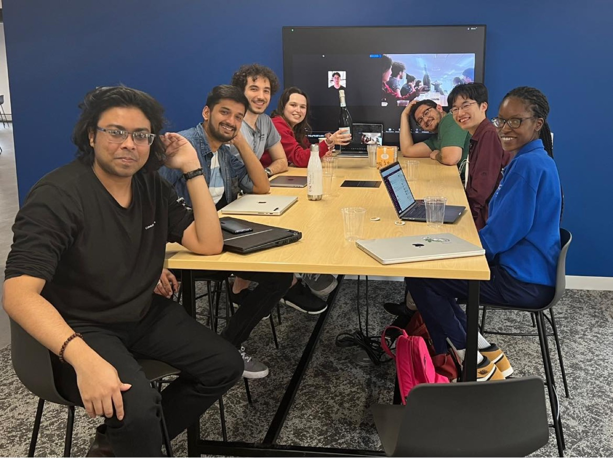
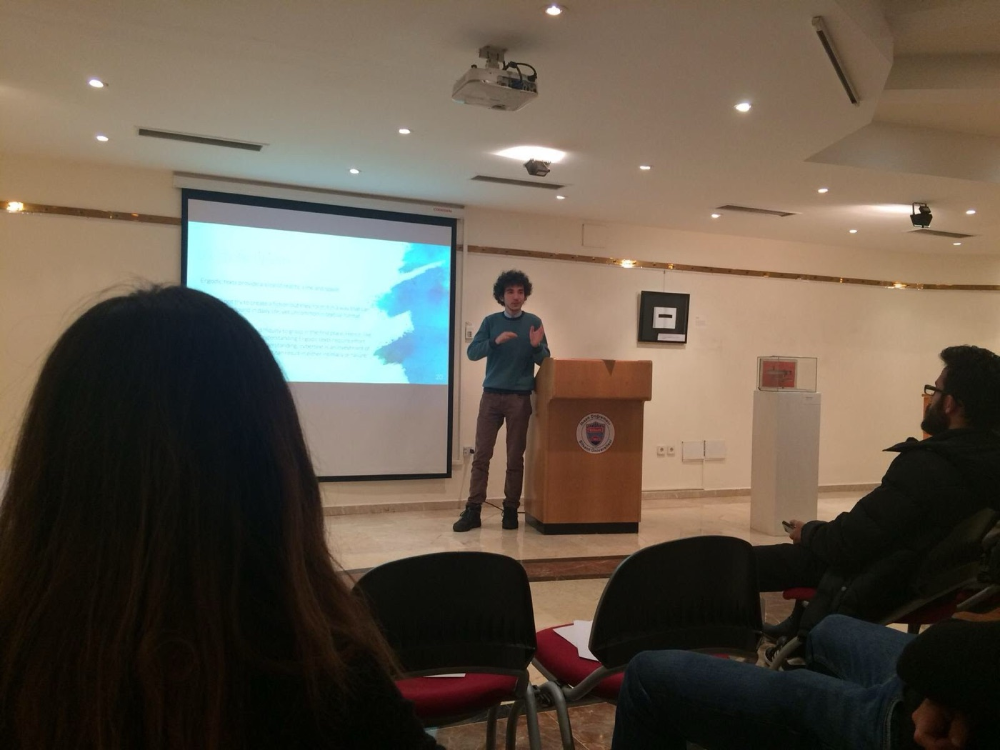
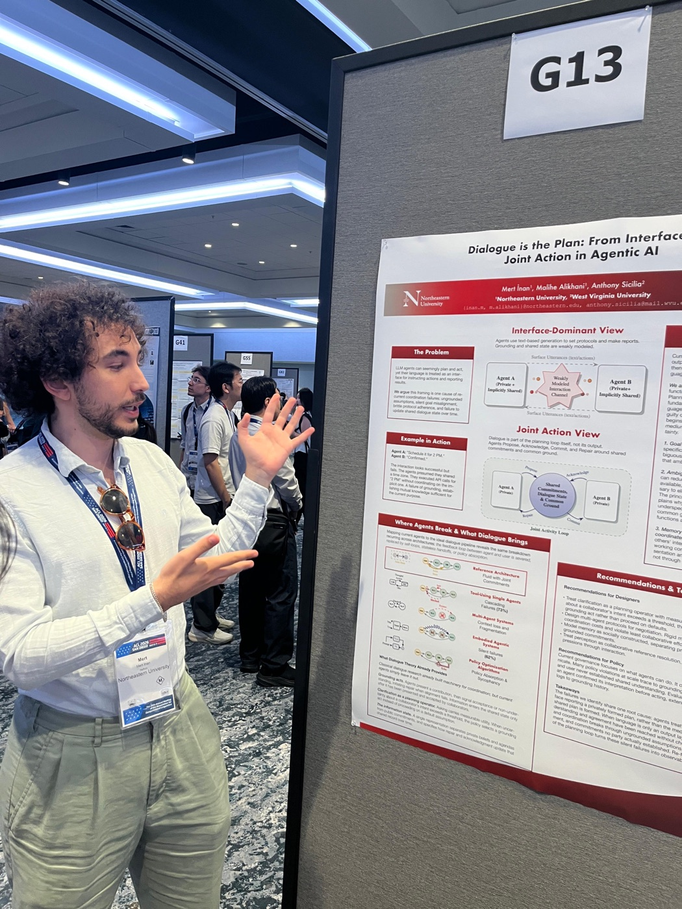
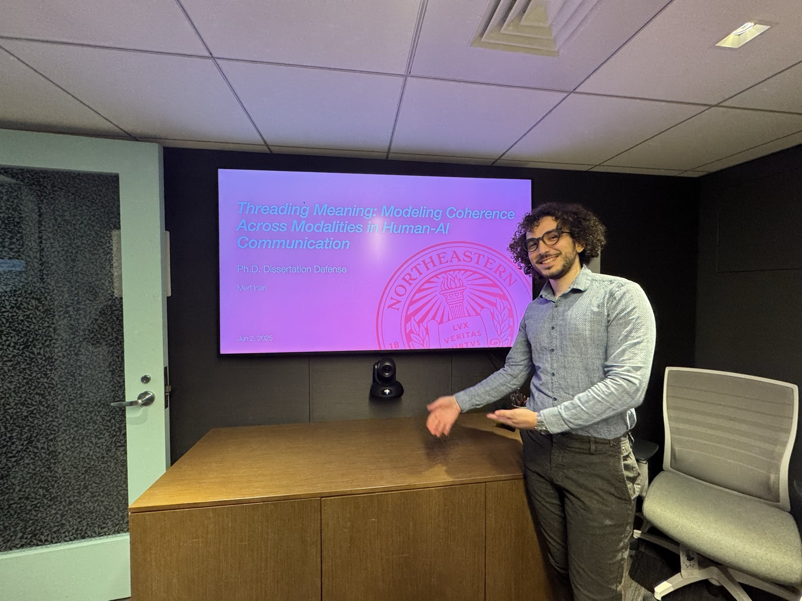
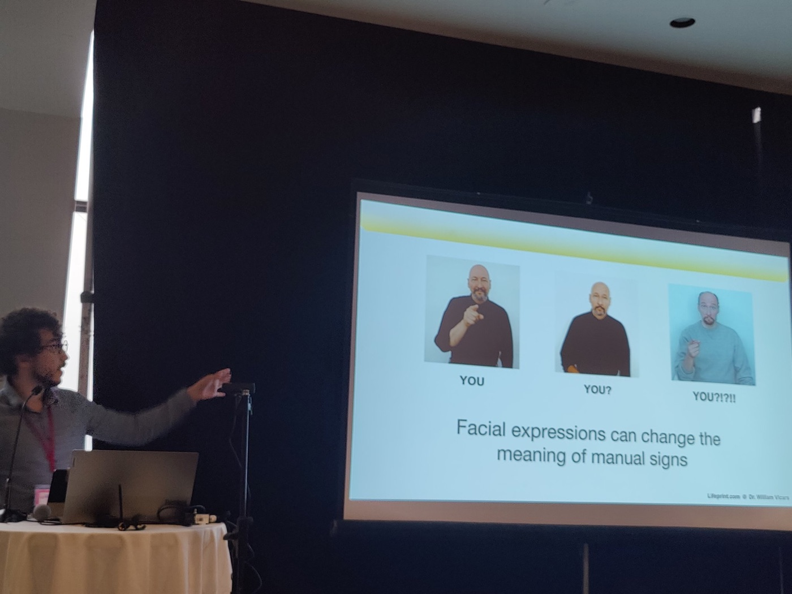
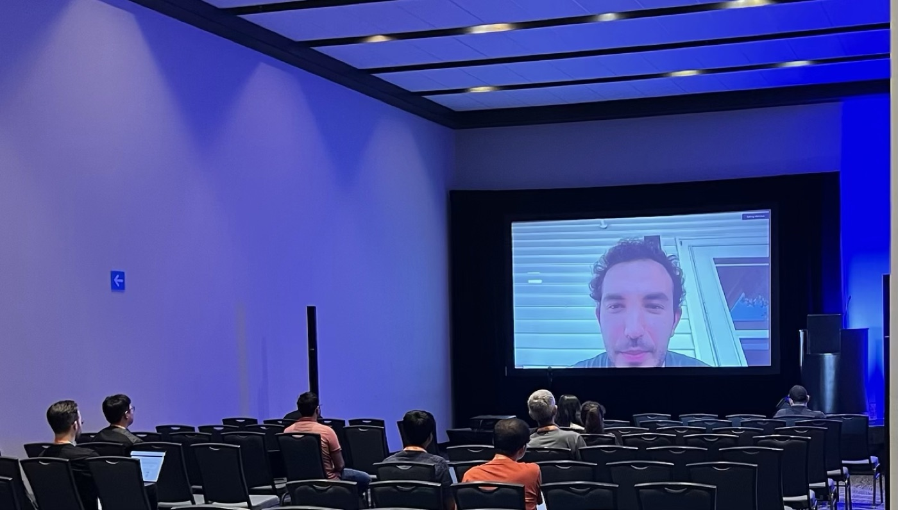
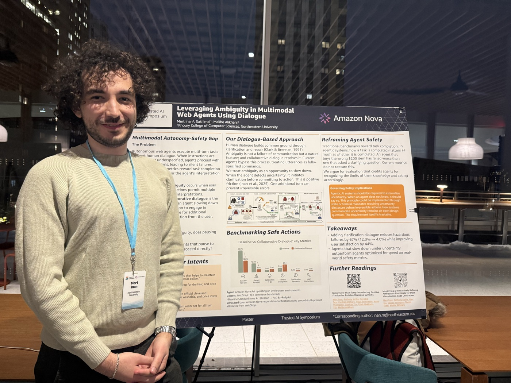
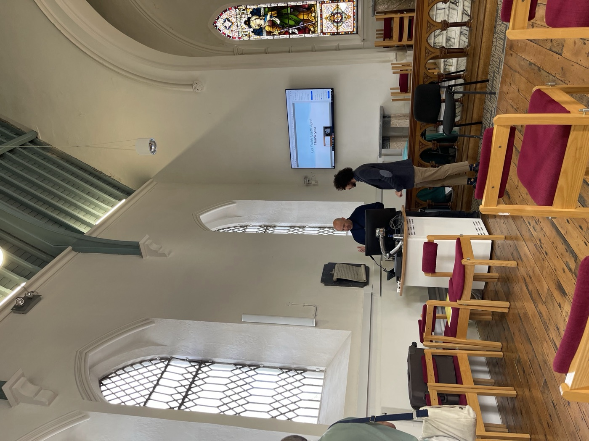
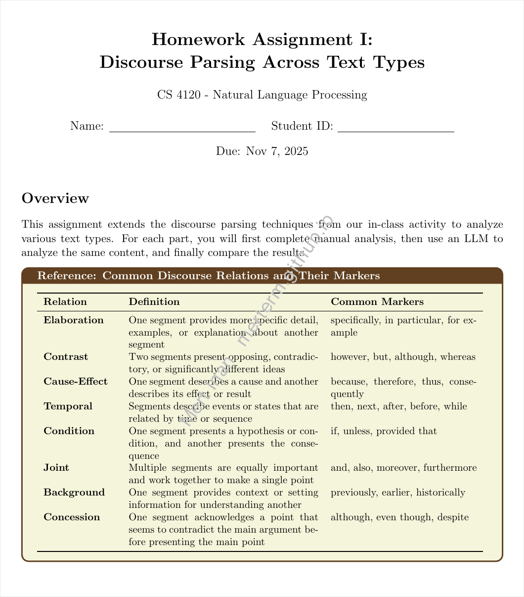
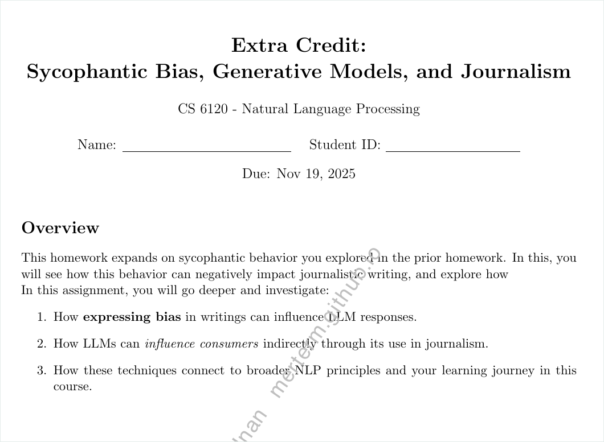

Where my research meets the classroom, and how I make abstract computer science tangible, inclusive, and a little bit joyful.
What I try to do every time I step in front of a class.
I teach computer science as a craft you build intuition for, not a pile of formulas to memorize, and I build that intuition with metaphors from the kitchen and from ordinary life. A recursive call is a recipe that quietly makes a smaller version of itself, and a cache is just keeping the spices you reach for most within arm's length. Most of all, I start with questions. Why are we doing this? Why does this model work? How did we get here, and will it really replace everything that came before? Only then do I reach for a concrete, slightly playful example, something a student can picture, poke at, and break, because the abstraction finally lands once they have felt the problem it solves. I try to match my effort to theirs, so thirty minutes of homework earns thirty minutes of feedback, and I read the room and change course the moment an idea stops landing.
Structure is what makes the risk-taking possible. My materials stay consistent and deliberately minimal, every lecture opens and closes with a short recap, and the deadlines are plain, so students can spend their energy on understanding instead of logistics. Inside that frame I run the room as a dialogue and a democracy: I watch for the backchannel cues, the furrowed brows and the quiet nods, and I poll the class about pace and comprehension so that no one is quietly left behind and every voice counts. I stay honest about the dead ends and frustrations of real research, which is what lets students try things that might fail. Inclusive design tends to make the work better too, and our Alexa Prize TaskBot, which generated signed-language instructions, is the example I keep coming back to.
Above all, I teach language before I teach the tools. People choose their words from what a language offers and from what a listener already shares, and selection is an old idea, since Aristotle's Rhetoric and Poetics are both accounts of it, while a model only samples from the text that people wrote. A student who feels that difference reads an output as one choice among many and asks what the model assumed, and I treat a prompt the very same way, as an utterance to a listener who cannot ask what you meant, which is exactly where my research on ambiguity lives, where most of the instructions I studied carried more than one reading. So my students are welcome to use generative AI, and they are graded on their audit of it: what they asked, what the model assumed, and what they verified. The best moment in any course I teach is still the same, when a student stops asking “is this right?” and starts asking “what if I tried…?”
Photos of me teaching and of the classes I've worked with.








Recorded lectures and presentations.
Each card can hold a thumbnail, a blurb, and material excerpts (lecture notes, assignments, video).
An invited teaching-demonstration lecture building intuition for vector spaces, cosine similarity, and the singular value decomposition — starting from an everyday “coffee-order” metaphor and a democratic pause prompt before reaching the linear algebra.
I taught language modeling, attention, and large language models — delivering full lectures, designing homeworks and in-class activities, and running a coherence-focused discourse-parsing session that tied the course to my own research in multimodal AI.


In [3]: # HW2 · measuring LLM sycophancy from huggingface_hub import InferenceClient client = InferenceClient(api_key=HF_TOKEN) def query_hf(prompt, model="deepseek-ai/DeepSeek-V3.2"): out = client.chat.completions.create( model=model, messages=[{"role": "user", "content": prompt}]) return out.choices[0].message.content
[Your blurb: e.g. mentored students through the rasterization and ray-tracing pipelines, debugged C++/OpenGL projects, and designed visual demos that made transforms and shading click.]
[Your blurb: e.g. supported a graduate course bridging neuroscience and computer vision, guided projects on visual cortex modeling, and tied assignments to my own research with Tai-Sing Lee.]
[Your blurb: e.g. taught data wrangling, visualization, and intro ML in Python; graded projects and ran hands-on lab sessions.]
[Your blurb: e.g. led problem sessions on automata, Turing machines, and complexity; helped students build proofs from intuition up.]
[Your blurb: e.g. coached students through sorting, graphs, and dynamic programming with worked examples and whiteboard walkthroughs.]
[Your blurb: e.g. taught logic, proof techniques, and discrete structures across three semesters; refined the recitation materials over time.]